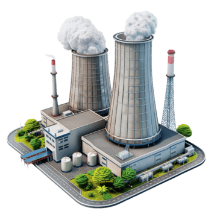

South Atlantic LNG West Africa Limited (SA LNG) is a Nigerian energy infrastructure company.
South Atlantic LNG West Africa Limited is focused on developing small-scale LNG infrastructure that supports Nigeria’s gas utilization agenda through virtual pipelines and gas-to-power solutions.
Our projects are designed to monetize stranded and flared gas, delivering clean, efficient fuel to power plants and industrial users who rely on expensive and carbon-intensive diesel and heavy fuel oil.
To be a leading virtual pipeline LNG platform in West Africa, driving gas-to-power adoption and eliminating routine gas flaring.

Routine gas flaring represents both an environmental challenge and a lost economic opportunity.
Corporate Office:
Plot X, Block X,
2nd Floor, Alfred Rewani, Falomo
Ikoyi, Lagos, Nigeria
Phone: +234 906 390 5573
Email: info@southatlanticlng.com